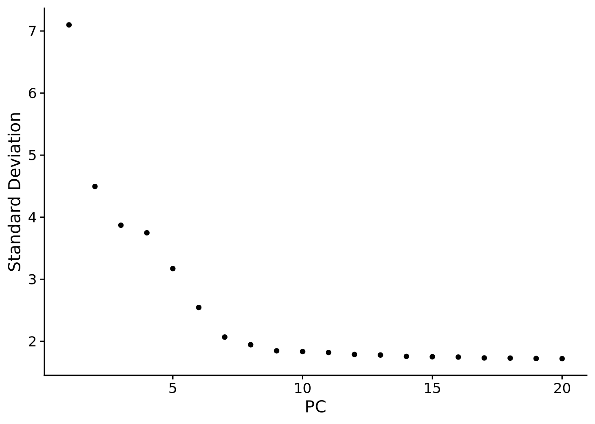

library(Seurat)Loading required package: SeuratObjectLoading required package: sp
Attaching package: 'SeuratObject'The following object is masked from 'package:base':
intersectlibrary(data.table)Seurat 教程
Loading required package: SeuratObjectLoading required package: sp
Attaching package: 'SeuratObject'The following object is masked from 'package:base':
intersect# Load the PBMC dataset
pbmc.data <- Read10X(data.dir = "filtered_gene_bc_matrices/hg19/")
# Initialize the Seurat object with the raw (non-normalized data).
pbmc <- CreateSeuratObject(counts = pbmc.data, project = "pbmc3k", min.cells = 3, min.features = 200)Warning: Feature names cannot have underscores ('_'), replacing with dashes
('-')An object of class Seurat
13714 features across 2700 samples within 1 assay
Active assay: RNA (13714 features, 0 variable features)
1 layer present: countsFormal class 'Seurat' [package "SeuratObject"] with 13 slots
..@ assays :List of 1
.. ..$ RNA:Formal class 'Assay5' [package "SeuratObject"] with 8 slots
..@ meta.data :'data.frame': 2700 obs. of 3 variables:
.. ..$ orig.ident : Factor w/ 1 level "pbmc3k": 1 1 1 1 1 1 1 1 1 1 ...
.. ..$ nCount_RNA : num [1:2700] 2419 4903 3147 2639 980 ...
.. ..$ nFeature_RNA: int [1:2700] 779 1352 1129 960 521 781 782 790 532 550 ...
..@ active.assay: chr "RNA"
..@ active.ident: Factor w/ 1 level "pbmc3k": 1 1 1 1 1 1 1 1 1 1 ...
.. ..- attr(*, "names")= chr [1:2700] "AAACATACAACCAC-1" "AAACATTGAGCTAC-1" "AAACATTGATCAGC-1" "AAACCGTGCTTCCG-1" ...
..@ graphs : list()
..@ neighbors : list()
..@ reductions : list()
..@ images : list()
..@ project.name: chr "pbmc3k"
..@ misc : list()
..@ version :Classes 'package_version', 'numeric_version' hidden list of 1
.. ..$ : int [1:3] 5 0 1
..@ commands : list()
..@ tools : list()The number of unique genes detected in each cell.
Low-quality cells or empty droplets will often have very few genes
Cell doublets or multiplets may exhibit an aberrantly high gene count
Similarly, the total number of molecules detected within a cell (correlates strongly with unique genes)
The percentage of reads that map to the mitochondrial genome
Normalizing layer: countsFinding variable features for layer countsCentering and scaling data matrixAs in PhenoGraph, we first construct a KNN graph based on the euclidean distance in PCA space, and refine the edge weights between any two cells based on the shared overlap in their local neighborhoods (Jaccard similarity). This step is performed using the FindNeighbors() function, and takes as input the previously defined dimensionality of the dataset (first 10 PCs).
To cluster the cells, we next apply modularity optimization techniques such as the Louvain algorithm (default) or SLM [SLM, Blondel et al., Journal of Statistical Mechanics], to iteratively group cells together, with the goal of optimizing the standard modularity function. The FindClusters() function implements this procedure, and contains a resolution parameter that sets the ‘granularity’ of the downstream clustering, with increased values leading to a greater number of clusters. We find that setting this parameter between 0.4-1.2 typically returns good results for single-cell datasets of around 3K cells. Optimal resolution often increases for larger datasets.
these methods aim to preserve local distances in the dataset (i.e. ensuring that cells with very similar gene expression profiles co-localize), but often do not preserve more global relationships.
PC_ 1
Positive: CST3, TYROBP, LST1, AIF1, FTL, FTH1, LYZ, FCN1, S100A9, TYMP
FCER1G, CFD, LGALS1, S100A8, CTSS, LGALS2, SERPINA1, IFITM3, SPI1, CFP
PSAP, IFI30, SAT1, COTL1, S100A11, NPC2, GRN, LGALS3, GSTP1, PYCARD
Negative: MALAT1, LTB, IL32, IL7R, CD2, B2M, ACAP1, CD27, STK17A, CTSW
CD247, GIMAP5, AQP3, CCL5, SELL, TRAF3IP3, GZMA, MAL, CST7, ITM2A
MYC, GIMAP7, HOPX, BEX2, LDLRAP1, GZMK, ETS1, ZAP70, TNFAIP8, RIC3
PC_ 2
Positive: CD79A, MS4A1, TCL1A, HLA-DQA1, HLA-DQB1, HLA-DRA, LINC00926, CD79B, HLA-DRB1, CD74
HLA-DMA, HLA-DPB1, HLA-DQA2, CD37, HLA-DRB5, HLA-DMB, HLA-DPA1, FCRLA, HVCN1, LTB
BLNK, P2RX5, IGLL5, IRF8, SWAP70, ARHGAP24, FCGR2B, SMIM14, PPP1R14A, C16orf74
Negative: NKG7, PRF1, CST7, GZMB, GZMA, FGFBP2, CTSW, GNLY, B2M, SPON2
CCL4, GZMH, FCGR3A, CCL5, CD247, XCL2, CLIC3, AKR1C3, SRGN, HOPX
TTC38, APMAP, CTSC, S100A4, IGFBP7, ANXA1, ID2, IL32, XCL1, RHOC
PC_ 3
Positive: HLA-DQA1, CD79A, CD79B, HLA-DQB1, HLA-DPB1, HLA-DPA1, CD74, MS4A1, HLA-DRB1, HLA-DRA
HLA-DRB5, HLA-DQA2, TCL1A, LINC00926, HLA-DMB, HLA-DMA, CD37, HVCN1, FCRLA, IRF8
PLAC8, BLNK, MALAT1, SMIM14, PLD4, P2RX5, IGLL5, LAT2, SWAP70, FCGR2B
Negative: PPBP, PF4, SDPR, SPARC, GNG11, NRGN, GP9, RGS18, TUBB1, CLU
HIST1H2AC, AP001189.4, ITGA2B, CD9, TMEM40, PTCRA, CA2, ACRBP, MMD, TREML1
NGFRAP1, F13A1, SEPT5, RUFY1, TSC22D1, MPP1, CMTM5, RP11-367G6.3, MYL9, GP1BA
PC_ 4
Positive: HLA-DQA1, CD79B, CD79A, MS4A1, HLA-DQB1, CD74, HIST1H2AC, HLA-DPB1, PF4, SDPR
TCL1A, HLA-DRB1, HLA-DPA1, HLA-DQA2, PPBP, HLA-DRA, LINC00926, GNG11, SPARC, HLA-DRB5
GP9, AP001189.4, CA2, PTCRA, CD9, NRGN, RGS18, CLU, TUBB1, GZMB
Negative: VIM, IL7R, S100A6, IL32, S100A8, S100A4, GIMAP7, S100A10, S100A9, MAL
AQP3, CD2, CD14, FYB, LGALS2, GIMAP4, ANXA1, CD27, FCN1, RBP7
LYZ, S100A11, GIMAP5, MS4A6A, S100A12, FOLR3, TRABD2A, AIF1, IL8, IFI6
PC_ 5
Positive: GZMB, NKG7, S100A8, FGFBP2, GNLY, CCL4, CST7, PRF1, GZMA, SPON2
GZMH, S100A9, LGALS2, CCL3, CTSW, XCL2, CD14, CLIC3, S100A12, RBP7
CCL5, MS4A6A, GSTP1, FOLR3, IGFBP7, TYROBP, TTC38, AKR1C3, XCL1, HOPX
Negative: LTB, IL7R, CKB, VIM, MS4A7, AQP3, CYTIP, RP11-290F20.3, SIGLEC10, HMOX1
LILRB2, PTGES3, MAL, CD27, HN1, CD2, GDI2, CORO1B, ANXA5, TUBA1B
FAM110A, ATP1A1, TRADD, PPA1, CCDC109B, ABRACL, CTD-2006K23.1, WARS, VMO1, FYB 
Computing nearest neighbor graphComputing SNNModularity Optimizer version 1.3.0 by Ludo Waltman and Nees Jan van Eck
Number of nodes: 2638
Number of edges: 95927
Running Louvain algorithm...
Maximum modularity in 10 random starts: 0.8728
Number of communities: 9
Elapsed time: 0 secondsAAACATACAACCAC-1 AAACATTGAGCTAC-1 AAACATTGATCAGC-1 AAACCGTGCTTCCG-1
2 3 2 1
AAACCGTGTATGCG-1
6
Levels: 0 1 2 3 4 5 6 7 8Warning: The default method for RunUMAP has changed from calling Python UMAP via reticulate to the R-native UWOT using the cosine metric
To use Python UMAP via reticulate, set umap.method to 'umap-learn' and metric to 'correlation'
This message will be shown once per session16:50:43 UMAP embedding parameters a = 0.9922 b = 1.11216:50:43 Read 2638 rows and found 10 numeric columns16:50:43 Using Annoy for neighbor search, n_neighbors = 3016:50:43 Building Annoy index with metric = cosine, n_trees = 500% 10 20 30 40 50 60 70 80 90 100%[----|----|----|----|----|----|----|----|----|----|**************************************************|
16:50:43 Writing NN index file to temp file /tmp/RtmpViqgJP/file108d9022afa07f
16:50:43 Searching Annoy index using 1 thread, search_k = 3000
16:50:43 Annoy recall = 100%
16:50:44 Commencing smooth kNN distance calibration using 1 thread with target n_neighbors = 30
16:50:44 Initializing from normalized Laplacian + noise (using RSpectra)
16:50:44 Commencing optimization for 500 epochs, with 105140 positive edges
16:50:47 Optimization finishedident.1 vs ident.2(ident.1 / ident.2)
# find all markers of cluster 2
cluster2.markers <- FindMarkers(pbmc, ident.1 = 2)
head(cluster2.markers, n = 5) p_val avg_log2FC pct.1 pct.2 p_val_adj
IL32 2.892340e-90 1.3070772 0.947 0.465 3.966555e-86
LTB 1.060121e-86 1.3312674 0.981 0.643 1.453850e-82
CD3D 8.794641e-71 1.0597620 0.922 0.432 1.206097e-66
IL7R 3.516098e-68 1.4377848 0.750 0.326 4.821977e-64
LDHB 1.642480e-67 0.9911924 0.954 0.614 2.252497e-63# find all markers distinguishing cluster 5 from clusters 0 and 3
cluster5.markers <- FindMarkers(pbmc, ident.1 = 5, ident.2 = c(0, 3))
head(cluster5.markers, n = 5) p_val avg_log2FC pct.1 pct.2 p_val_adj
FCGR3A 8.246578e-205 6.794969 0.975 0.040 1.130936e-200
IFITM3 1.677613e-195 6.192558 0.975 0.049 2.300678e-191
CFD 2.401156e-193 6.015172 0.938 0.038 3.292945e-189
CD68 2.900384e-191 5.530330 0.926 0.035 3.977587e-187
RP11-290F20.3 2.513244e-186 6.297999 0.840 0.017 3.446663e-182# find markers for every cluster compared to all remaining cells, report only the positive
# ones
pbmc.markers <- FindAllMarkers(pbmc, only.pos = TRUE) |> setDT()Calculating cluster 0Calculating cluster 1Calculating cluster 2Calculating cluster 3Calculating cluster 4Calculating cluster 5Calculating cluster 6Calculating cluster 7Calculating cluster 8 cluster p_val avg_log2FC pct.1 pct.2 p_val_adj gene
<fctr> <num> <num> <num> <num> <num> <char>
1: 8 0.000000e+00 14.358608 0.615 0 0.000000e+00 LY6G6F
2: 7 4.242759e-55 10.552019 0.094 0 5.818520e-51 SCT
3: 6 2.627481e-33 9.468857 0.058 0 3.603328e-29 LIM2
4: 3 3.824593e-25 9.123429 0.047 0 5.245046e-21 FAM177B
5: 5 3.028858e-55 8.869893 0.105 0 4.153776e-51 LYPD2
6: 1 1.972702e-14 8.681249 0.027 0 2.705364e-10 FCAR
7: 0 1.953258e-08 7.152372 0.016 0 2.678697e-04 GTSCR1
8: 2 1.583685e-09 7.075248 0.017 0 2.171866e-05 HSD11B1
9: 4 8.650134e-07 7.045884 0.010 0 1.186279e-02 CTB-91J4.1
Attaching package: 'sctransform'The following object is masked _by_ '.GlobalEnv':
pbmc# pbmc_data <- Read10X(data.dir = "/brahms/shared/vignette-data/pbmc3k/filtered_gene_bc_matrices/hg19/")
pbmc <- #CreateSeuratObject(pbmc_data) |>
#PercentageFeatureSet(pattern = "^MT-", col.name = "percent.mt") |>
pbmc |>
SCTransform(vars.to.regress = "percent.mt") |>
RunPCA(reduction.name = 'pca_sct') |>
FindNeighbors(dims = 1:30, reduction = 'pca_sct' ) |>
RunUMAP(dims = 1:30, reduction = 'pca_sct', reduction.name = 'umap_sct') |>
FindClusters(graph.name = 'SCT_snn')Running SCTransform on assay: RNARunning SCTransform on layer: countsvst.flavor='v2' set. Using model with fixed slope and excluding poisson genes.Variance stabilizing transformation of count matrix of size 12519 by 2638Model formula is y ~ log_umiGet Negative Binomial regression parameters per geneUsing 2000 genes, 2638 cellsFound 60 outliers - those will be ignored in fitting/regularization stepSecond step: Get residuals using fitted parameters for 12519 genesComputing corrected count matrix for 12519 genesCalculating gene attributesWall clock passed: Time difference of 13.61669 secsDetermine variable featuresRegressing out percent.mtCentering data matrixSet default assay to SCTPC_ 1
Positive: MALAT1, RPS27A, CCL5, RPS6, LTB, RPS3A, RPS27, RPL13A, RPL3, RPS3
IL32, NKG7, RPS12, RPL21, RPL13, RPL9, RPS18, RPL23A, RPSA, CD3D
RPS15A, PTPRCAP, RPL34, B2M, RPLP2, RPL30, CD3E, EEF1A1, IL7R, CTSW
Negative: FTL, LYZ, FTH1, CST3, S100A9, TYROBP, S100A8, AIF1, LST1, FCN1
LGALS1, FCER1G, LGALS2, S100A4, SAT1, COTL1, CTSS, TYMP, S100A6, IFITM3
CFD, HLA-DRA, PSAP, S100A11, GPX1, SERPINA1, GSTP1, OAZ1, CD68, NPC2
PC_ 2
Positive: NKG7, CCL5, GZMB, GNLY, GZMA, CST7, PRF1, FGFBP2, CTSW, GZMH
CCL4, B2M, SPON2, FCGR3A, CLIC3, CD247, HLA-C, HOPX, KLRD1, GZMM
ACTB, XCL2, AKR1C3, IGFBP7, HLA-A, TTC38, APMAP, SRGN, S1PR5, PRSS23
Negative: HLA-DRA, CD74, CD79A, HLA-DPB1, HLA-DQA1, HLA-DQB1, TCL1A, CD79B, HLA-DRB1, MS4A1
HLA-DPA1, RPL13, RPL13A, LINC00926, LTB, RPL18A, RPL32, HLA-DRB5, VPREB3, RPS18
RPS27, CD37, RPS2, HLA-DQA2, RPL11, RPS6, RPS12, RPS23, HLA-DMA, RPS5
PC_ 3
Positive: S100A8, S100A9, LYZ, FTL, RPS12, JUNB, IL7R, LDHB, CD3D, RPS14
RPS6, RPS3, CD3E, RPL13, RPL32, NOSIP, IL32, S100A6, S100A4, TPT1
VIM, RPL10, RPL3, RPLP1, FOS, RGCC, RPL34, RPL11, RPS18, RPS15A
Negative: CD74, HLA-DRA, CD79A, HLA-DPB1, HLA-DQA1, HLA-DRB1, CD79B, HLA-DPA1, HLA-DQB1, TCL1A
NKG7, MS4A1, HLA-DRB5, GZMB, GNLY, LINC00926, HLA-DQA2, FGFBP2, VPREB3, PRF1
CST7, HLA-DMA, FCER2, CD37, GZMA, BANK1, GZMH, HLA-DMB, HVCN1, CCL5
PC_ 4
Positive: S100A8, S100A9, LYZ, LGALS2, CD14, GPX1, GSTP1, NKG7, MS4A6A, FCN1
CCL3, S100A12, FOLR3, CEBPD, GNLY, GRN, CSF3R, GZMB, GAPDH, RBP7
BLVRB, CCL5, ID1, VCAN, IL8, CST7, ALDH2, FGFBP2, NCF1, ASGR1
Negative: FCGR3A, LST1, FCER1G, AIF1, IFITM3, MS4A7, IFITM2, FTH1, COTL1, RHOC
RP11-290F20.3, TIMP1, SAT1, HES4, CDKN1C, SERPINA1, CEBPB, CKB, RPS19, LRRC25
HMOX1, LILRA3, HCK, SIGLEC10, PILRA, SPI1, ACTB, STXBP2, BID, ABI3
PC_ 5
Positive: GNLY, GZMB, FGFBP2, FCGR3A, PRF1, NKG7, TYROBP, FCER1G, LST1, IFITM3
AIF1, SPON2, MALAT1, RPS6, FTL, RPL10, RPS19, CCL4, RPS3A, IFITM2
RPL13, RPL32, IGFBP7, CTSW, RPL19, CLIC3, RPL11, RPL21, CD247, CD7
Negative: CCL5, GPX1, PPBP, PF4, SDPR, SPARC, GNG11, HIST1H2AC, CD9, TPM4
CLU, NRGN, TUBB1, GP9, RGS18, TAGLN2, RUFY1, MPP1, TUBA4A, CA2
CTSA, NCOA4, GRAP2, ACTB, PTCRA, TREML1, NGFRAP1, PGRMC1, FERMT3, RGS10 Warning: Key 'PC_' taken, using 'pcasct_' insteadComputing nearest neighbor graphComputing SNN16:51:18 UMAP embedding parameters a = 0.9922 b = 1.112Found more than one class "dist" in cache; using the first, from namespace 'spam'Also defined by 'BiocGenerics'16:51:18 Read 2638 rows and found 30 numeric columns16:51:18 Using Annoy for neighbor search, n_neighbors = 30Found more than one class "dist" in cache; using the first, from namespace 'spam'Also defined by 'BiocGenerics'16:51:18 Building Annoy index with metric = cosine, n_trees = 500% 10 20 30 40 50 60 70 80 90 100%[----|----|----|----|----|----|----|----|----|----|**************************************************|
16:51:18 Writing NN index file to temp file /tmp/RtmpViqgJP/file108d903a0de247
16:51:18 Searching Annoy index using 1 thread, search_k = 3000
16:51:19 Annoy recall = 100%
16:51:19 Commencing smooth kNN distance calibration using 1 thread with target n_neighbors = 30
16:51:20 Initializing from normalized Laplacian + noise (using RSpectra)
16:51:20 Commencing optimization for 500 epochs, with 112052 positive edges
16:51:24 Optimization finishedModularity Optimizer version 1.3.0 by Ludo Waltman and Nees Jan van Eck
Number of nodes: 2638
Number of edges: 109099
Running Louvain algorithm...
Maximum modularity in 10 random starts: 0.8371
Number of communities: 12
Elapsed time: 0 secondsFormal class 'Seurat' [package "SeuratObject"] with 13 slots
..@ assays :List of 2
.. ..$ RNA:Formal class 'Assay5' [package "SeuratObject"] with 8 slots
.. ..$ SCT:Formal class 'SCTAssay' [package "Seurat"] with 9 slots
..@ meta.data :'data.frame': 2638 obs. of 9 variables:
.. ..$ orig.ident : Factor w/ 1 level "pbmc3k": 1 1 1 1 1 1 1 1 1 1 ...
.. ..$ nCount_RNA : num [1:2638] 2419 4903 3147 2639 980 ...
.. ..$ nFeature_RNA : int [1:2638] 779 1352 1129 960 521 781 782 790 532 550 ...
.. ..$ percent.mt : num [1:2638] 3.02 3.79 0.89 1.74 1.22 ...
.. ..$ RNA_snn_res.0.5: Factor w/ 9 levels "0","1","2","3",..: 3 4 3 2 7 3 5 5 5 6 ...
.. ..$ seurat_clusters: Factor w/ 12 levels "0","1","2","3",..: 5 4 1 2 6 1 5 5 5 7 ...
.. ..$ nCount_SCT : num [1:2638] 2287 2615 2482 2353 1908 ...
.. ..$ nFeature_SCT : int [1:2638] 769 1134 1111 942 551 767 765 775 523 558 ...
.. ..$ SCT_snn_res.0.8: Factor w/ 12 levels "0","1","2","3",..: 5 4 1 2 6 1 5 5 5 7 ...
..@ active.assay: chr "SCT"
..@ active.ident: Factor w/ 12 levels "0","1","2","3",..: 5 4 1 2 6 1 5 5 5 7 ...
.. ..- attr(*, "names")= chr [1:2638] "AAACATACAACCAC-1" "AAACATTGAGCTAC-1" "AAACATTGATCAGC-1" "AAACCGTGCTTCCG-1" ...
..@ graphs :List of 4
.. ..$ RNA_nn :Formal class 'Graph' [package "SeuratObject"] with 7 slots
.. ..$ RNA_snn:Formal class 'Graph' [package "SeuratObject"] with 7 slots
.. ..$ SCT_nn :Formal class 'Graph' [package "SeuratObject"] with 7 slots
.. ..$ SCT_snn:Formal class 'Graph' [package "SeuratObject"] with 7 slots
..@ neighbors : list()
..@ reductions :List of 4
.. ..$ pca :Formal class 'DimReduc' [package "SeuratObject"] with 9 slots
.. ..$ umap :Formal class 'DimReduc' [package "SeuratObject"] with 9 slots
.. ..$ pca_sct :Formal class 'DimReduc' [package "SeuratObject"] with 9 slots
.. ..$ umap_sct:Formal class 'DimReduc' [package "SeuratObject"] with 9 slots
..@ images : list()
..@ project.name: chr "pbmc3k"
..@ misc : list()
..@ version :Classes 'package_version', 'numeric_version' hidden list of 1
.. ..$ : int [1:3] 5 0 1
..@ commands :List of 11
.. ..$ NormalizeData.RNA :Formal class 'SeuratCommand' [package "SeuratObject"] with 5 slots
.. ..$ FindVariableFeatures.RNA :Formal class 'SeuratCommand' [package "SeuratObject"] with 5 slots
.. ..$ ScaleData.RNA :Formal class 'SeuratCommand' [package "SeuratObject"] with 5 slots
.. ..$ RunPCA.RNA :Formal class 'SeuratCommand' [package "SeuratObject"] with 5 slots
.. ..$ FindNeighbors.RNA.pca :Formal class 'SeuratCommand' [package "SeuratObject"] with 5 slots
.. ..$ RunUMAP.RNA.pca :Formal class 'SeuratCommand' [package "SeuratObject"] with 5 slots
.. ..$ SCTransform.RNA :Formal class 'SeuratCommand' [package "SeuratObject"] with 5 slots
.. ..$ RunPCA.SCT :Formal class 'SeuratCommand' [package "SeuratObject"] with 5 slots
.. ..$ FindNeighbors.SCT.pca_sct:Formal class 'SeuratCommand' [package "SeuratObject"] with 5 slots
.. ..$ RunUMAP.SCT.pca_sct :Formal class 'SeuratCommand' [package "SeuratObject"] with 5 slots
.. ..$ FindClusters :Formal class 'SeuratCommand' [package "SeuratObject"] with 5 slots
..@ tools : list()